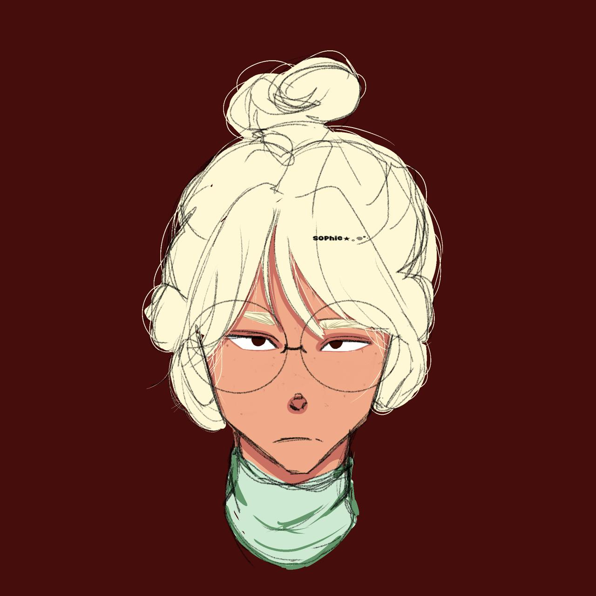

This is one of my favourites 'cuz I'm pretty bad doing true faces'
IM AN ARTIST, SO WHAT?
These are my arts in digital
Funfact: I made this with a mexican artis names Den. Her instagra, is _den_ai
The app I use is "Procreate" or sometimes "IbisPaint"
I made them in a scketchbook, with pencil or pilots, yk.
Funfact 'bout creator: Im in love with voleyball